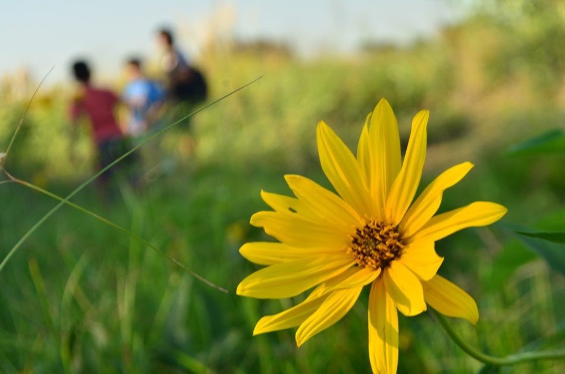

La reserva de Laferrere, predio de más de 83 hectáreas, tiene una gran importancia ya
que cuenta con tres ambientes naturales: el pastizal pampeano, humedales y bosque
de tala, que absorbe y retiene el agua de lluvia. La Reserva cuenta con alrededor de 65 especies de aves distintas y 200
especies vegetales registradas.

Servicios Ecosistémicos de la Reserva Natural de Laferrere
Depuración del aire y agua: Los ecosistemas naturales presentes en la reserva actúan como filtros naturales, purificando el aire y el agua de contaminantes y mejorando la calidad ambiental.
Recarga de acuíferos: La reserva ayuda a recargar los acuíferos subterráneos, manteniendo así la disponibilidad de agua dulce para la comunidad y la vida silvestre.
Retención y absorción de excedentes hídricos: Durante las lluvias, la vegetación y los suelos de la reserva retienen y absorben el exceso de agua, reduciendo así el riesgo de inundaciones y protegiendo a Laferrere de posibles daños.
Protección de suelos y riberas de erosión: La vegetación en la reserva ayuda a prevenir la erosión del suelo y de las riberas, conservando la fertilidad del suelo y manteniendo la integridad de los cuerpos de agua locales.
Regulación de temperaturas: Los espacios verdes de la reserva actúan como reguladores naturales de temperatura, proporcionando áreas de sombra y reduciendo el efecto de isla de calor urbano.
Captura de carbono: La vegetación de la reserva absorbe dióxido de carbono (CO2) de la atmósfera, ayudando a mitigar el cambio climático y mejorar la calidad del aire.
Conservación de ecosistemas: La reserva protege y preserva diversos ecosistemas locales, como el pastizal pampeano, contribuyendo a la conservación de la biodiversidad y ayudando a mitigar los efectos del cambio climático.
Sanidad en el ambiente: La presencia de áreas verdes y la biodiversidad en la reserva contribuyen a mejorar la salud ambiental, promoviendo un ambiente más limpio y saludable para los residentes de Laferrere.
Sitios de esparcimiento y recreación: La reserva ofrece espacios naturales para que la comunidad disfrute de actividades al aire libre, como caminatas, ciclismo y observación de aves, promoviendo un estilo de vida activo y saludable.
Espacio para educación ambiental: La reserva proporciona un entorno ideal para la educación ambiental, donde se pueden realizar actividades educativas y programas de sensibilización sobre la importancia de la conservación y el respeto por la naturaleza.
Vecinos de La Matanza se oponen a la construcción del Plan Procrear II.